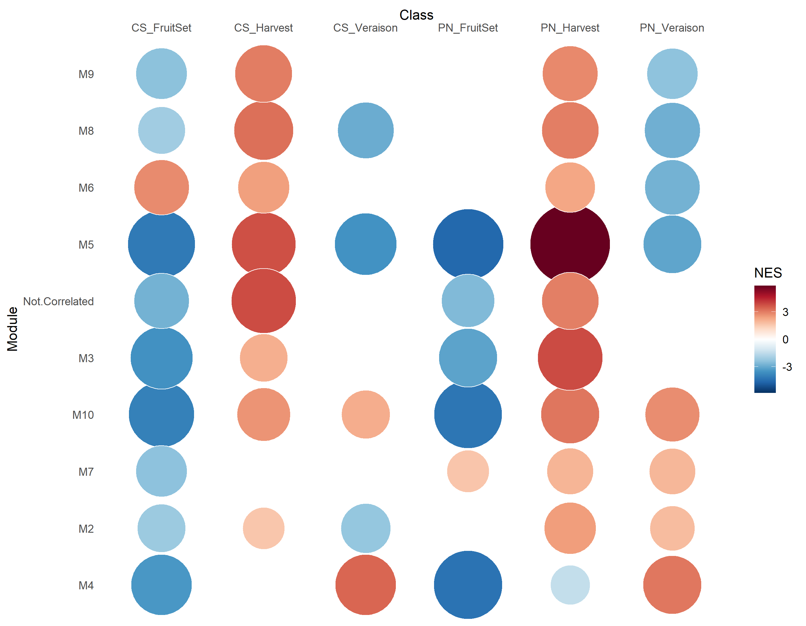

1 · GSEA nativo de CEMiTool
Enriquecimiento por clase Cultivar × Stage
El GSEA nativo se conserva intacto. La interfaz siguiente expone la figura original, ES, NES, p ajustado y la composición de años sin recalcular nada.
Verificación de años: cada una de las seis clases contiene exactamente 9 muestras = 3 de 2012 + 3 de 2013 + 3 de 2014. Los años están agrupados dentro de Cultivar × Stage; no son GSEA separados por año.
\n\nResumen GSEA
Qué entra al análisis, qué exportó CEMiTool y qué excepción permanece explícita.
Figura nativa de CEMiTool
PNG y PDF vectorial exportados directamente del objeto beta10.

Matriz interactiva GSEA
Selecciona ES, NES o p ajustado y cualquier fila exportada por CEMiTool.
Composición 2012 + 2013 + 2014
Desglose exacto de muestras por año dentro de cada clase usada por el GSEA.
Método y límites
Clases62 cultivares × 3 etapas.
Muestras por clase93 de cada año.
SalidaES · NES · padjExportada por CEMiTool.
LímiteYear pooledNo es un GSEA independiente por año.
M1: está presente en la red y en ORA/perfiles, pero no aparece en las matrices GSEA nativas exportadas. No se imputa ni se inventa una fila.
2 · ORA funcional
ORA completo dentro del reporte integrado
La misma profundidad funcional del reporte ORA standalone, ahora embebida aquí: resumen, términos, temas MapMan, QC, auditoría M5, GO y método.
Relación con los años: los módulos fueron inferidos con las 54 muestras de 2012–2014. ORA analiza membresía génica + anotación funcional y no tiene una dimensión Year propia.
\n\nPanorama del enriquecimiento
Recuentos globales y distribución de hits MapMan v3 por módulo.
Lectura: un mayor número de términos enriquecidos no convierte un módulo en “mejor”. La cobertura de anotación y la redundancia de términos deben leerse junto a la significancia.
Explorador ORA por término
Barras horizontales = −log10(FDR global). Filtra por fuente, módulo, significancia y texto.
Tabla ORA filtrada
| Término | ID | Módulo | Overlap | Fold | p | FDR global | Aspect |
|---|
Temas MapMan preespecificados
Incluye también resultados no significativos o no testables para evitar sesgo de mostrar solo hits positivos.
Cobertura y QC
La cobertura de anotación se mantiene separada de la significancia estadística.
| Fuente | Módulo | Genes módulo | Anotados | Cobertura | Background | Tests | Hits | Warning |
|---|
M5 · MapMan v3 vs v5.1
Auditoría explícita del conflicto CHS/STS sin adjudicar identidad enzimática causal.
Interpretación segura: la discordancia entre versiones es un conflicto de anotación y no una validación independiente.
Gene Ontology auditado · T-005A
La capa vigente excluye términos obsoletos y conserva la cobertura limitada como caveat.
Método y límites
Universo3.050 genesMódulos beta10 congelados; el fondo depende de cada fuente.
PruebaHipergeométricaUnilateral de sobrerrepresentación.
CorrecciónBH / FDRInferencia principal módulo×término por fuente.
LímiteORA ≠ causalidadTampoco identifica por sí sola el driver temporal de un módulo.
Fuentes:
results/functional_enrichment_beta10/, results/go_ora_beta10/, scripts T-005/T-005A.3 · Perfiles por año · M1–M10
Eigengene canónico y sensibilidad Hub-core
El eigengene canónico permanece como PC1 de todos los genes. Hub-core PC1 usa el top 10% por kWithin como sensibilidad separada; no reemplaza resultados T-003/T-004.
2012, 2013 y 2014 permanecen explícitos tanto en el eigengene canónico como en Hub-core. La nueva interfaz también muestra exactamente qué hubs centrales entraron a cada Hub-core PC1.
Eigengene vs hubs: el eigengene canónico sigue siendo PC1 de todos los genes del módulo. Hub-core PC1 es una sensibilidad separada calculada con el top 10% por kWithin. Por eso los hubs no se mezclan como una columna del eigengene: se muestran como el conjunto que define esa sensibilidad, junto a sus gráficos y contrastes.
\n\nSensibilidad por módulo
Correlación Hub-core PC1 vs eigengene canónico y concordancia de dirección en los nueve contrastes Stage × Year.
| Módulo | Genes totales | Hubs usados | Fracción | Correlación 54 muestras | Correlación medias | Dirección igual |
|---|
Trayectorias por módulo y año
Alterna entre el resumen canónico y la sensibilidad Hub-core; filtra 2012, 2013 o 2014.
Tabla completa de perfiles
Una fila por Module × Cultivar × Stage × Year. Permite comparar directamente el score canónico y Hub-core.
| Módulo | Cultivar | Stage | Año | Media | SD | N | SE | Score |
|---|
Hubs centrales usados en Hub-core PC1
Esta tabla responde directamente qué genes entraron al cálculo de sensibilidad. Son top decil por kWithin dentro de cada módulo.
| Gen | Módulo | Rank kWithin | kWithin | kWithin / arista posible |
|---|
Contrastes Stage × Year: canónico vs Hub-core
Compara la dirección Cabernet Sauvignon − Pinot noir para los nueve contrastes de cada módulo.
| Módulo | Stage | Año | Canónico CS−PN | Hub-core CS−PN | Misma dirección |
|---|
Qué significa cada score
CanónicoPC1 de todos los genesEs el eigengene del módulo usado en los análisis principales.
Hub-coreTop 10% kWithinPC1 centrado/escalado de genes centrales; sensibilidad adicional.
Selección hubskWithinSuma de adyacencias intramodulares en la red beta10 congelada.
ReglaNo reemplaza T-004Sirve para comprobar cuánto depende la trayectoria de genes periféricos.
Importante: recalcular un “eigengene solo con hubs” y usarlo como si fuera el eigengene original cambiaría la definición científica. Por eso aquí se conserva como análisis de sensibilidad separado.